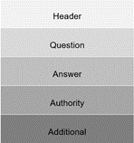
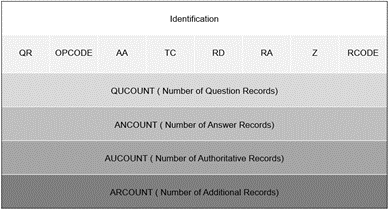
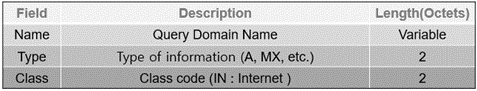
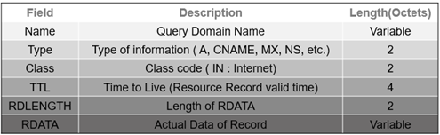

In the human world, people use names to identify different things like other people, places, things, etc., unlike the computer world. Computers communicate and identify each other by using numbers like I.P. addresses. To make communication between humans and computers possible, DNS was developed. DNS stands for Domain Name System and resolves names to numbers; it resolves domain names to I.P. addresses. In other words, when we type a web page's name in the browser, DNS converts it to the I.P address of that website so it is understandable for the computer. then, the DNS server searches its database to find a matching I.P address for that name. DNS can be referred to as the phone book of the internet because it works like a phonebook; wherein you search for people’s names and you find their numbers.
Domain names
Names that we type in a browser URL field like “google.com” are domain names. ICANN which stands for “Internet Corporation for Assigned Names and Numbers” manages these domain names. ICANN is an American non-profit organization founded by Jon Pastel in 1998. This organization is responsible for the maintenance, stability, and security of databases related to namespace and numerical spaces of the internet.
Root server
In the hierarchy of DNS, the top level is the root. There are 13 sets of roots with unique I.P. addresses placed around the world and they are operated by 12 organizations. The root server provides a list of authoritative name servers for each of the TLDs.
TLD server
Refers to the last part of the domain name or the top-level domain. this server stores address information of top-level domains like:
- .com for commercial businesses
- .com for commercial businesses
- .org for organizations
- .net for network organizations
- .edu for educational institutions
Authoritative name server
These servers are the last stop of the DNS query and the final authority which knows the I.P. address and has a collection of domain names with their associated I.P. addresses.
Second level domain
The part of a domain that comes before TLD. Like “google” in “google.com”
Types of DNS queries
iterative query
- Requesting host sends the request to the local DNS server. If the server has the I.P address in its cache memory It will give back a response.
- If it does not know the I.P. address, it will send a request to the root server. The root server does not have the I.P. address, but it sends back a response for the local server that contains information on whom to contact.
- Then the local server sends a request to the TLD server as per the root server told. The TLD server also sends back a response with information on whom to contact next.
- In the last step, the local server sends a request to the authoritative name server and receives a response containing the requested I.P. address. The local server stores this I.P. address in its cache for the next time.
Recursive query
- Requesting host sends the request to the local DNS server.
- The local server forwards this request to the root server.
- The root server sends this request to the TLD server.
- TLD server redirects the request to the authoritative name server.
- Authoritative name server sends back the response including the I.P. address and the response comes back to level by level in the recursive format that it was sent.
Non-recursive query
To prevent additional bandwidth consumption and to reduce the load on servers, DNS local servers save the I.P. addresses of the previously visited websites in their cache and will respond to the query with the I.P. address upon receiving it and there is no need for further communication with other servers.

DNS protocol Message Syntax
The structure of the message created when requesting DNS consists of five section: Header, Question, Answer, Authority, and Additional.

- Header: It indicates whether a query, response, or other sections (Question, Answer, Authority, Additional) are used
- Question: Use a query record, which means a request to the name server. It is used in both query and response messages. It contains the domain name that is being queried (the QNAME), along with the class (QCLASS) and type (QTYPE) of resource record requested.
- Answer: Resulting of resource record for the request. It contains response messages that the server replies to the client.
- Authority: Resource records indicates authentication, providing information about servers with authentication privileges for queries.
- Additional: Resource record which contains other information.
DNS Syntax Section’s Format
Header Section Format

The Identification field verifies that the responses answered to the client's query are related. The client gives a different number each time it sends a query request, and the server replies by copying the number to the corresponding response message. The Parameter field (Flag field) is responsible for letting the server or client know a lot of important information about the DNS packet. It determines how the query is handled by the server. This field contains eight bits of information. The information of each bits represents the following.
- QR(Query Response): It indicates the type of message. 0 is a query message, 1 is a response message.
- OPCODE : Indicates the type of query or response. 0 is standard, 1 is inverse, 2 is server status request.
- AA(Authoritative Answer): Only used in response messages. It indicates that the name server (DNS) is authoritative for the query host.
- TC(Truncated): The designation of 1 indicates that the response was truncated to 512 bytes, exceeding the UDP maximum size of 512 bytes.
- RD(Recursion Desired): It is used in query messages. 1 means that client wants a recursive query.
- RA(Recursion Available): It is used in response messages. This refers to the availability of recursive responses from DNS.
- Z: This is a reserved field. It is designated as 000.
- RCODE: It shows response errors in response messages. 0 means no error.
Question Section Format

Answer, Authority, Additional Section Format
All three sections are sharing same Formation.
